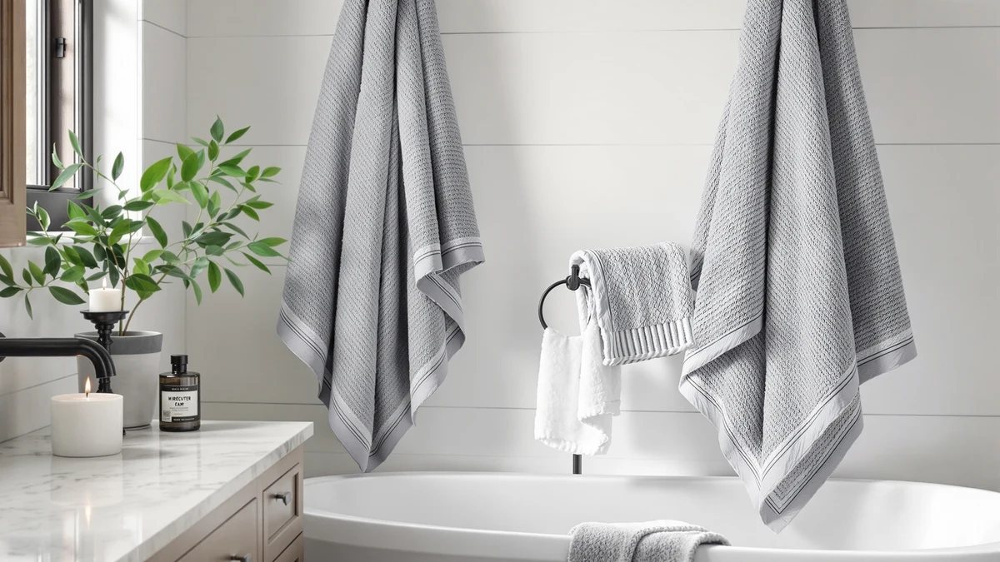

Best Bath Towel vs Washcloth (2026) | Best Bath Towels
Prices and picks verified as of August 2026. Independent, reader-supported reviews.


Things to Know Before You Buy
- A standard bath towel measures about 27 by 52 inches; a washcloth measures 12 to 13 inches square. They handle different jobs, not different budgets.
- The washcloth cleans you during the shower. The bath towel dries you after it. A stocked bathroom carries both.
- Washcloths collect soap, oil, and dead skin, so wash them after one or two uses. Bath towels can go three or four showers between washes.
- Weight matters on the towel side: aim for 450 to 500 GSM cotton. On the washcloth side, a lighter, softer weave beats a heavy one.
- Skip fabric softener on both. It coats the fibers with a film that cuts absorbency over time.
The bath towel vs washcloth question comes up whenever you stock a bathroom from scratch, and the short answer is that the two do different jobs. A washcloth is a small square of fabric, about 12 or 13 inches per side, that you use with soap while you shower. A bath towel is a 27-by-52-inch sheet of terry that dries your body once you step out.
The confusion starts because both come in the same cotton terry, often inside the same matched sets, and stores rarely explain which piece does what. Buy the wrong mix and you end up scrubbing with a towel corner or drying off with a cloth the size of a dinner napkin.
This guide covers the size and fabric differences, when to use each one, the mistakes that shorten their lifespan, and the care routine that keeps both fresh. At the end you will find three sets we recommend if you want to stock a complete towel drawer in one order.
What You Need to Know
Strip away the marketing and the bath towel vs washcloth comparison comes down to two numbers. A washcloth measures 12 to 13 inches square and weighs a couple of ounces. A standard bath towel measures around 27 by 52 inches and weighs a pound or more. That size gap dictates the job: the washcloth works soap across your skin while you shower, and the bath towel absorbs the water left on your body afterward.
The hygiene schedules differ as much as the sizes. A washcloth picks up soap residue and skin oil with each use, then sits damp, which makes it a comfortable home for bacteria. Toss it in the hamper after one or two uses. A bath towel touches clean, rinsed skin, so it can hang between showers and go three or four uses before a wash.
Price runs in the towel's favor per square inch but the washcloth's favor per piece. Washcloths cost $1 to $3 each when you buy them in bundles, while a decent bath towel starts around $10 and a plush one runs $25 or more. Because washcloths cycle through the laundry faster, you need more of them on hand: five to seven per person against two or three bath towels.
Types and Categories
Cotton terry dominates both sides of the bath towel vs washcloth aisle, and for good reason: the looped pile grabs and holds water better than flat fabric. Within terry, you will see combed cotton, which removes short fibers for a smoother feel, and ring-spun cotton, which twists fibers tighter for durability. Turkish and Egyptian cotton use longer staples that stay soft through more wash cycles.
Beyond standard terry, washcloths branch into more specialized fabrics than bath towels do. Muslin cloths offer a flat, gentle weave for faces and babies. Exfoliating cloths weave in textured fibers for scrubbing. Bamboo-blend cloths market themselves on softness for sensitive skin, though the rayon processing behind most bamboo fabric undercuts the natural-fiber claim.
Bath towels branch by size and weave instead. The family runs from the hand towel, about 16 by 28 inches, through the standard bath towel to the bath sheet at 35 by 60 inches or more, a matchup we cover in our bath towel vs bath sheet guide. Waffle-weave towels trade plushness for fast drying. Turkish flat-woven towels, called peshtemals, pack thin and dry fast, which makes them popular for travel and small bathrooms.
How to Choose
Treat the bath towel vs washcloth decision as two separate purchases with different priorities, because the specs that matter on one side barely matter on the other.
For bath towels, weight matters most. Fabric weight shows up as GSM, grams per square meter. A 300 to 400 GSM towel feels thin but dries on the bar overnight, which suits gyms, kids, and humid bathrooms. A 450 to 600 GSM towel feels plush and absorbs more per pass, but it hogs dryer time and can sour if your bathroom traps moisture. Most people land well at 450 to 500 GSM. Check the label for 100 percent cotton; poly blends dry faster but absorb less.
For washcloths, prioritize feel and quantity over specs. The cloth touches your face, so a softer, lighter weave beats a heavy one, and heavyweight cloths stay soggy in your hand. Buy more than you think you need. At five to seven cloths per person per week, a 12-pack for one adult is a reasonable floor, and bulk packs drop the per-piece price below $2.
Match quantities to your laundry rhythm too. If you run a wash twice a week, two bath towels per person cover the rotation. If laundry happens weekly, add a third towel and a few more cloths so nobody grabs a damp one.
Common Mistakes to Avoid
The most common bath towel vs washcloth mistake is making one piece do both jobs. Scrubbing with your bath towel transfers the grime you just washed off into the same fabric you dry with tomorrow, and it pushes the towel toward that musty smell days sooner. Keep a cloth in the shower and a towel on the bar, and let each one do its own work.
Fabric softener causes the second-biggest problem. It coats cotton loops with a waxy film that makes towels feel soft in the store-sample way while cutting how much water they hold. Skip it on both towels and washcloths, and skip dryer sheets for the same reason.
Two habits shorten washcloth life in particular. Leaving the cloth draped over the faucet in a steamy shower keeps it wet around the clock, so it breeds bacteria and starts to smell within days; wring it out and hang it outside the stall, or send it straight to the hamper. Sharing one cloth across family members moves skin bacteria from person to person, which matters if anyone deals with acne or eczema.
Finally, resist buying on color alone. A $40 set that matches your tile but weighs 300 GSM will disappoint you at drying time.
Care and Maintenance
Care routines split along the same line as everything else in the bath towel vs washcloth comparison: the washcloth needs more frequent washing, and the bath towel needs more careful drying.
Wash washcloths in warm or hot water after one or two uses. Face cloths in particular carry oil and product residue that cold water leaves behind. Bath towels can wait three or four uses, washed warm with about half the detergent you would guess, since excess detergent builds up in the pile and stiffens it. Once a month, run towels through a hot cycle with a cup of white vinegar and no detergent to strip buildup and kill the mildew smell.
Dry both fully before folding. A towel that goes into the closet at 95 percent dry comes out smelling off. Shake towels out before the dryer so the loops fluff, and pull them out promptly rather than letting them sit compressed. Line drying works and spares the fibers, though it leaves cotton terry stiffer than machine drying. Our guide on keeping towels soft covers the full routine.
Replace the two on different schedules. Washcloths wear out in six months to a year of regular rotation; when the edges fray or the fabric thins, demote them to cleaning rags. Bath towels last two to five years depending on weight and wash habits.
Our Top Picks
Once you understand the split, a few well-chosen sets stock the whole drawer. These three cover different corners of the bath towel vs washcloth divide: a kids' set plus two full-size cotton options for adults.

Editor's Pick
6 PCS Toddler Towels Set
Six soft cotton pieces sized for small kids, so one order covers both the washing and the drying side of a toddler's bath routine at under $4 per piece.
$22.98
Check Price on Amazon
Best Value
Jacquotha Pink Bath Towels Set
A matched set of full-size pink towels that outfits a whole bathroom in one order, a practical starting point if you are replacing a mismatched drawer.
$33.43
Check Price on Amazon
Premium Choice
MyOwn Cotton 2 Pack Oversized
Two oversized cotton bath towels for about $8.50 each. The extra length gives you the full-body coverage that a standard towel misses.
$16.99
Check Price on AmazonCan you use a washcloth instead of a bath towel?
Not for drying off.
How many bath towels and washcloths do you need per person?
Plan on two to three bath towels and five to seven washcloths per person.
Frequently Asked Questions
Can you use a washcloth instead of a bath towel?
How many bath towels and washcloths do you need per person?
Are bath towels and washcloths made from the same fabric?
Should you wash washcloths separately from bath towels?
What is the difference between a washcloth and a hand towel?
Verdict
The bath towel vs washcloth question resolves into a simple division of labor: the washcloth cleans you during the shower, the bath towel dries you after it, and a stocked bathroom carries both in the right quantities. Keep five to seven washcloths and two to three bath towels per person, wash the cloths after a use or two, and keep fabric softener away from all of it. Spend where it counts, on a 450 to 500 GSM cotton bath towel that will last years, and save on washcloths, which wear out and cycle through the hamper fast regardless of price. If you are outfitting kids, the CandyHome toddler set gives you six washable cotton pieces for under $23 in one order, and the MyOwn oversized two-pack covers the adult drying side for about $8.50 a towel. Sort the two jobs correctly once and the whole linen closet gets easier to manage, and cheaper to restock.